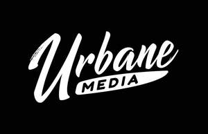
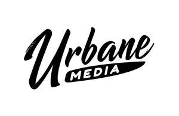

Trade Mark Journal No.2025/022 30 May 2025
UK00004164082 23 February 2025 (35,41)
Mark 1

Mark 2

- Class 35
- Post-production editing of advertising or commercials; Production of video recordings for marketing purposes; Video recordings for marketing purposes (Production of -); Production of video recordings for publicity purposes; Video recordings for publicity purposes (Production of -); Production of cinema commercials; Production of television commercials; Producing promotional videotapes, video discs, and audio visual recordings.
- Class 41
- Audio and video production, and photography; Post-production editing services in the field of music, videos and film; Audio, video and multimedia production, and photography; Film editing (Photographic -); Video film production; Video editing; Film editing; Production of video films; Film editing (Cinematographic -); Video production; Recording, film, video and television studio services; Production of animation; Production of pre-recorded video films; Video and DVD film production; Video tape film production; Editing of video recordings; Audio, film, video and television recording services; Film and video tape film production; Audio and video editing services; Special effects animation services for film and video; Animation production services; Cinematographic film studio services; Cinematographic adaptation and editing; Film production, other than advertising films; Video production services; Production of video recordings; Film production; Production of videos; Video editing services for events; Motion picture film production; Services in the production of animated motion pictures and television features; Production of training videos; Film production services; Production of training films; Videotape editing; Editing (Videotape -); Consultancy on film and music production; Production of documentaries; Production of animated motion pictures; Production of video and audio recordings; Production of film studies; Production of pre-recorded cinema films; Film studio services; Production of cinematographic films; Production of musical videos; Production of motion picture films; Aerial photography; Editing of television programmes; Production of television films; Operation of video and audio equipment for the production of radio and television programs; Audio recording and production; Studio services for the recording of videos; Recording studio services for videos; Services for the production of entertainment in the form of video; Film directing, other than advertising films; Photo editing; Audio recording and production services; Production of films, other than advertising films; Services for the production of entertainment in the form of film; Production of sound and video recordings; Film production for entertainment purposes; Television production; Television, radio and film production; Production of films in studios; Recording studio services for television; Audio production; Production of musical works in a recording studio; Production of educational sound and video recordings; Photography; Production of motion pictures; Production of television and cinema films; Providing audio or video studio services; Production of audio entertainment; Production of films; Video recording services; Provision of video recording studio services; Providing audio or video studios; Production of video tapes for corporate use in management educational training; Aerial videography services; Audio and video recording services; Production of animated cine-film clips; Exhibition of video film sound tracks.
Kevin John Stride